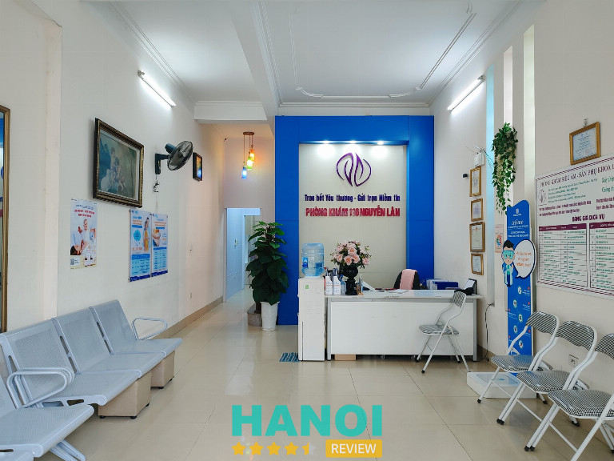
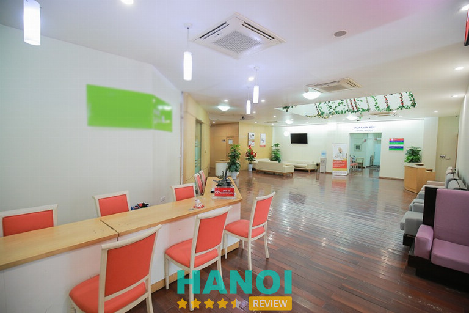
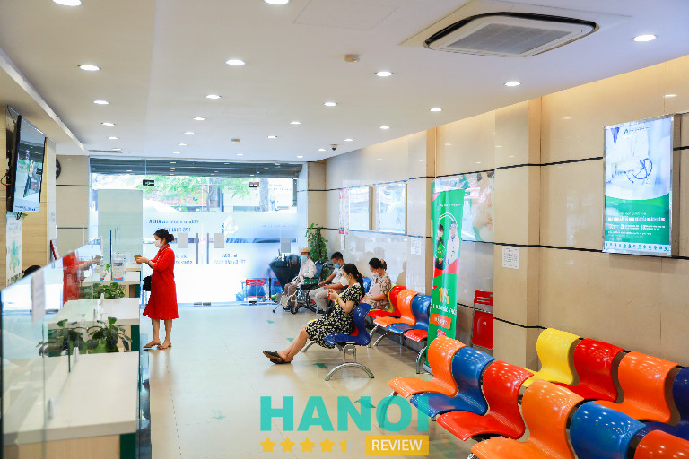
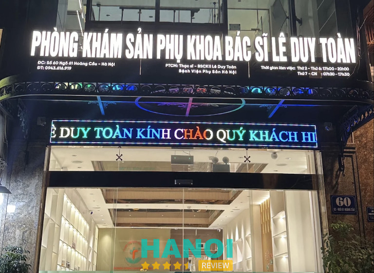

10 Phòng khám thai tại Hà Nội bác sĩ tận tâm, dịch vụ tốt
Tìm kiếm phòng khám thai ở Hà Nội chất lượng là một điều rất quan trọng, bởi khám thai trong quá trình này giúp theo dõi sức khỏe của mẹ bầu và thai nhi, đồng thời tầm soát bệnh lý bẩm sinh từ giai đoạn đầu của thai kỳ. Điều này đảm bảo sự phát triển khỏe mạnh và an toàn cho cả mẹ và thai nhi.
Top 10 Phòng khám thai ở Hà Nội uy tín tốt nhất
Khám thai định kỳ là quan trọng, nhưng chọn đúng địa chỉ khám thai uy tín và chất lượng cũng không kém phần quan trọng. Chất lượng của địa điểm khám trực tiếp ảnh hưởng đến kết quả của quá trình thai kỳ. Nếu lựa chọn một địa chỉ khám kém chất lượng, thiếu chuyên môn và trang thiết bị y tế, có thể dẫn đến kết quả không chính xác.
Trong bài viết này, HaNoiReview sẽ giới thiệu danh sách 10 Phòng khám thai hàng đầu tại Hà Nội. Đây là những địa điểm mà bạn có thể tin tưởng và tham khảo để bảo vệ sức khỏe thai kỳ một cách hiệu quả nhất.
Phòng khám chuyên khoa Sản – Bệnh viện Đa khoa Phương Đông
Phòng khám chuyên khoa Sản thuộc Bệnh viện Đa khoa Phương Đông là địa chỉ hàng đầu về dịch vụ khám thai tại Hà Nội. Nơi đây không chỉ nổi tiếng với chất lượng cao mà còn ấn tượng bởi sự hiện đại và tiên tiến trong trang thiết bị y tế. Đội ngũ bác sĩ tận tâm, giàu kinh nghiệm, và chuyên môn cao tạo nên niềm tin từ phía người dân.
Khi chọn lựa dịch vụ khám thai tại Bệnh viện Đa khoa Phương Đông, mẹ bầu sẽ được đảm bảo quyền lợi và trải nghiệm sự chăm sóc tận tâm và chất lượng.
Siêu âm, monitor, xét nghiệm thường quy, theo dõi tim thai, và tiêm phòng đều được thực hiện đầy đủ, giúp mẹ bầu kiểm soát tốt sức khỏe của mình và thai nhi. Điều này giúp họ nhanh chóng phát hiện và xử lý mọi thay đổi tiêu cực, bảo đảm an toàn cho cả mẹ và bé trong suốt quãng thời gian thai kỳ.
Bệnh viện không ngừng nỗ lực đầu tiên trong việc áp dụng và cập nhật công nghệ y tế tiên tiến trên thế giới. Họ xây dựng và củng cố hợp tác với các chuyên gia hàng đầu và các bệnh viện uy tín trên khắp cả nước, với hi vọng mang lại trải nghiệm thăm khám và điều trị tốt nhất cho khách hàng.
Thông tin liên hệ:
- Địa chỉ: 9 Phố Viên, P. Cổ Nhuế 2, Q. Bắc Từ Liêm, Hà Nội
- Điện thoại: 1900 1806
- Email: info.benhvienphuongdong@gmail.com
- Website: benhvienphuongdong.vn
- Fanpage: FB.com/benhviendakhoaphuongdong
Phòng khám 116 Nguyễn Lân
Phòng khám tại địa chỉ 116 Nguyễn Lân là địa chỉ chuyên sâu về chăm sóc sức khỏe phụ nữ, đặc biệt là trong lĩnh vực phụ sản. Bác sĩ CKII Nguyễn Chí Hùng, người đứng đầu phòng khám, là chuyên gia được đào tạo tại Học viện Quân Y, Đại học Y Hà Nội, và có thâm niên làm việc tại các bệnh viện danh tiếng như Bưu Điện Hà Nội, Đa khoa Nông Nghiệp Hà Nội và Bệnh viện Quân y Quân khu 3.

Với nhiều năm kinh nghiệm, Bác sĩ Nguyễn Chí Hùng đã trở thành sự lựa chọn tin cậy của nhiều người khi muốn thăm khám và theo dõi thai kỳ định kỳ. Địa chỉ này là địa điểm lựa chọn cho những thai phụ có mong muốn trải qua một thai kỳ khỏe mạnh và an toàn.
Ngoài Bác sĩ Nguyễn Chí Hùng, phòng khám còn có đội ngũ bác sĩ sản phụ khoa chuyên môn, và lịch làm việc của họ sẽ được thông báo trên fanpage của phòng khám. Việc theo dõi thông tin này giúp bà bầu dễ dàng chọn lựa thời gian khám phù hợp với lịch trình của mình.
Phòng khám 116 Nguyễn Lân chuyên sâu trong các dịch vụ như siêu âm thai định kỳ, siêu âm 4D, nhằm đánh giá sự phát triển của thai nhi và phát hiện kịp thời các vấn đề khả năng. Ngoài ra, đội ngũ bác sĩ ở đây còn tận tâm tư vấn về dinh dưỡng, cách chăm sóc, kiêng cử, giúp bà bầu trải qua thời kỳ mang thai một cách dễ dàng và thuận lợi nhất.
Thông tin liên hệ:
- Địa chỉ: 11/116 Nguyễn Lân, Thanh Xuân, Hà Nội
- Điện thoại: 0914 389 825
- Email: pk116nguyenlan@gmail.com
- Fanpage: FB.com/PK116NguyenLan
- Giờ làm việc: Thứ 2 – Thứ 6 (17:00 – 20:00), Thứ 7 – Chủ nhật (7:30 – 19:30)
GỢI Ý: 10 Dịch vụ tắm cho bé tại nhà ở Hà Nội uy tín chuyên nghiệp
Phòng khám đa khoa quốc tế Hà Nội
Phòng khám đa khoa quốc tế Hà Nội là cái tên hàng đầu cho các bà bầu khi tìm kiếm một địa chỉ khám thai ở Hà Nội. Với sự tin tưởng lớn từ những người khám từ trước, chắc hẳn phòng khám có rất nhiều ưu điểm đặc biệt.
Đội ngũ bác sĩ chuyên môn và giàu kinh nghiệm, có trình độ chuyên môn cao, mà còn mang đến tinh thần y đức cao. Ví dụ, bác sĩ Nguyễn Thị Phương Loan và bác sĩ Tạ Thị Hồng Duyên là những bác sĩ đầy nhiệt huyết, luôn hướng tới mục tiêu chính là sức khỏe và hạnh phúc của bệnh nhân.
Phòng khám sử dụng trang thiết bị y tế hiện đại, được nhập khẩu từ các nước có hệ thống y tế phát triển. Điển hình là máy siêu âm 4D, mang đến hình ảnh thai nhi chân thực và sắc nét.
Môi trường khám chữa bệnh luôn được giữ sạch sẽ và tuân thủ đầy đủ các tiêu chuẩn vệ sinh và khử trùng theo quy định của Bộ Y tế.
Phòng khám hỗ trợ đặt lịch khám trực tuyến qua tổng đài hoặc trên trang web, giúp bà bầu dễ dàng tự quản lý thời gian và tránh chờ đợi lâu. Dịch vụ khám chữa bệnh linh hoạt và chủ động giải đáp mọi thắc mắc của mẹ bầu.
Chi phí khám và xét nghiệm tại phòng khám vô cùng hợp lý, phù hợp với quy định của Bộ Y tế.
Với thời gian làm việc mở rộng đến 20 giờ 30 phút hàng ngày, phòng khám cung cấp sự linh hoạt cho các bà bầu trong việc sắp xếp thời gian thăm khám. Việc đặt lịch trước trên trang web sẽ giúp tránh được tình trạng chờ đợi kéo dài.
Thông tin liên hệ:
- Địa chỉ: 152 Xã Đàn, P. Phương Liên, Q. Đống Đa, Hà Nội
- Điện thoại: 024 6299 1188
- Email: seoxadan@gmail.com
- Website: dakhoaxadan.com
- Fanpage: FB.com/DaKhoaQuocTeHaNoi/
- Giờ làm việc: Tất cả ngày trong tuần và ngày lễ (8:00 – 20:30)
Phòng khám Đa khoa Quốc tế Thanh Chân
Phòng khám Đa khoa Quốc tế Thanh Chân là một địa khám chữa bệnh hiện đại, rộng rãi và sang trọng tại hà Nội. Nằm ở vị trí trung tâm, phòng khám đầu tư mạnh về trang thiết bị và máy móc theo tiêu chuẩn Châu Âu, mang đến cho bệnh nhân trải nghiệm khám chữa bệnh chất lượng.
Khoa sản phụ là một trong những chuyên ngành hàng đầu của phòng khám, được đầu tư kỹ thuật và nhân sự chuyên môn. Đội ngũ bác sĩ đến từ các bệnh viện danh tiếng từ bệnh viện Quân đội TW 108, bệnh viện Phụ sản Hà Nội,… với các chuyên gia như Thạc sĩ, Bác sĩ CKII Nguyễn Hùng Sơn, Bác sĩ CKI Sản phụ khoa Lê Thúy Minh,… đều có nhiều năm kinh nghiệm.

Để hỗ trợ công tác khám và theo dõi sức khỏe, phòng khám trang bị các thiết bị hiện đại như máy siêu âm 4D GE Voluson và máy siêu âm Siemen. Gói chăm sóc thai kỳ tại đây không chỉ bao gồm khám thai và theo dõi định kỳ mà còn đưa ra tư vấn dinh dưỡng, tâm lý, và chuẩn bị cho quá trình sinh nở.
Đặc biệt, phòng khám hỗ trợ đặt lịch hẹn trước, giúp bệnh nhân tiết kiệm thời gian và tránh trời gió mưa khi đến khám. Điều này thể hiện sự chăm sóc và quan tâm đặc biệt đến trải nghiệm của người đến khám.
Thông tin liên hệ:
- Địa chỉ: 6 Nguyễn Thị Thập, KĐT Trung Hòa Nhân Chính, Q. Cầu Giấy, Hà Nội
- Điện thoại: 024 6288 1155
- Email: reception@thanhchanclinic.vn
- Website: phongkhamthanhchan.vn
- Facebook: FB.com/phongkhamthanhchan.vn
- Giờ làm việc: Tất cả các ngày trong tuần ( 7:30 – 12:00 và 13:30 – 17:00)
THAM KHẢO: 10 Shop thời trang bà bầu tại Hà Nội mẫu mã trẻ trung, giá tốt
Phòng khám chuyên khoa phụ sản Dr. Chường
Phòng khám chuyên khoa phụ sản Dr. Chường, một địa điểm khám thai đáng tin cậy với các dịch vụ chất lượng cao trong lĩnh vực chăm sóc sức khỏe phụ nữ.
Không gian rộng rãi, sạch đẹp, và trang thiết bị nhập ngoại mới 100%, hiện đại và tiện nghi toàn diện. Bác sĩ chuyên khoa 2 (CK ll) Nguyễn Xuân Chường, với hơn 30 năm kinh nghiệm làm việc trong lĩnh vực siêu âm sản phụ khoa, đảm nhận trực tiếp việc thực hiện siêu âm sàng lọc dị tật thai tại phòng khám, cam kết mang đến trải nghiệm chăm sóc sức khỏe cho mọi người.
Tại phòng khám của Dr. Chường cung cấp đa dạng các loại siêu âm đáp ứng đầy đủ nhu cầu chẩn đoán:
- Siêu âm hình thái học thai nhi (4 chiều): Trải nghiệm hình ảnh sinh động và rõ nét của thai nhi nhưng không giới hạn trong không gian 4 chiều.
- Siêu âm chẩn đoán: Đội ngũ chuyên gia tận tâm thực hiện các buổi siêu âm chính xác để đưa ra chẩn đoán đáng tin cậy.
- Siêu âm 2 chiều sản phụ khoa: Phục vụ nhu cầu theo dõi sức khỏe thai nhi và mẹ bầu với chất lượng cao.
- Siêu âm tổng quát ổ bụng: Đánh giá toàn diện sức khỏe bụng và các cơ quan nội tạng.
- Siêu âm đầu dò âm đạo theo dõi nang trứng: Đảm bảo quá trình theo dõi nang trứng diễn ra chính xác và đáng tin cậy.
- Siêu âm tuyến vú, tinh hoàn, tuyến giáp: Kiểm tra và đánh giá sức khỏe của các cơ quan quan trọng.
Chi phí điều trị tại phòng khám phụ thuộc vào nhiều yếu tố như mức độ nghiêm trọng, phương pháp điều trị, và tình trạng sức khỏe cá nhân.
Thông tin liên hệ:
- Địa chỉ: 16 Hoàng Ngân, P. Trung Hoà, Q. Cầu Giấy, Hà Nội
- Điện thoại: 0912 177 737
- Giờ mở cửa: Thứ 2: 08:00 – 18:00 / Thứ 3 – Thứ 6: 17:00 – 21:00 / Thứ 7: 08:00 – 18:00
Phòng khám 125 Thái Thịnh
Phòng khám Đa khoa 125 Thái Thịnh với hơn 20 năm hoạt động đã trở thành một địa điểm yêu thích của các bà bầu bởi dịch vụ khám và siêu âm thai chất lượng, an toàn và hiệu quả.
Với trang thiết bị hiện đại, phòng khám 125 Thái Thịnh đáp ứng đầy đủ nhu cầu khám thai. Từ máy siêu âm 2D, 4D siêu âm mới nhất đến máy laze và máy soi tử cung, mọi thiết bị đều được chuẩn bị sẵn sàng để đảm bảo quá trình khám thai diễn ra suôn sẻ.

Ngoài các dịch vụ khám định kì và phát hiện dị tật thai nhi, phòng khám còn nổi tiếng với xét nghiệm sàng lọc không xâm lấn Nipt. Với các gói xét nghiệm đa dạng, mẹ bầu có thể yên tâm trong quá trình theo dõi sức khỏe của thai nhi.
Khoa phụ sản tại đây là nơi tập trung của đội ngũ bác sĩ sản khoa có kinh nghiệm và giàu chuyên môn. Để tối ưu hóa trải nghiệm khám, phòng khám đã hỗ trợ đặt lịch hẹn qua hotline, website và fanpage. Điều này giúp mẹ bầu dễ dàng tự quản lý thời gian và tránh tình trạng chờ đợi không mong muốn.
Thông tin liên hệ:
- Địa chỉ: 125 – 127 đường Thái Thịnh, Thịnh Quang, Đống Đa, Hà Nội
- Điện thoại: 024 73096 888
- Email: info@ttmedic.vn
- Website: ttmedic.vn
- Fanpage: FB.com/phongkhamdakhoa125thaithinh
THAM KHẢO: 10 Địa chỉ massage body trị liệu tại Hà Nội dịch vụ tốt nhất
Phòng khám Đa khoa Thái Hà
Phòng khám Đa khoa Thái Hà, điểm đến ưa thích cho nhiều người trong việc chăm sóc sức khỏe thai phụ, đã hơn 10 năm mang đến dịch vụ y tế an toàn và uy tín. Được trang bị máy móc và trang thiết bị hiện đại, phòng khám cung cấp các dịch vụ chăm sóc sức khỏe chuyên sâu trong các vấn đề như bệnh xã hội, hậu môn, phụ khoa, nam khoa,…
Đội ngũ bác sĩ tại đây không chỉ là những chuyên gia có kinh nghiệm mà còn là những người làm việc với tâm huyết. Bác sĩ Hà Kiều Anh, Bác sĩ Đỗ Văn Chiến, Bác sĩ CKI Đỗ Văn Hiếu,… là những tên tuổi nổi bật, đảm bảo mang lại chất lượng dịch vụ hàng đầu.
Phòng khám chủ yếu tập trung vào các dịch vụ khám và sàng lọc, và nếu có vấn đề phức tạp, bác sĩ sẽ hướng dẫn bệnh nhân đến các bệnh viện lớn khác trong khu vực. Tuy chi phí khám tại đây có thể cao hơn so với bệnh viện công lập, nhưng để tiện cân nhắc về khả năng tài chính, mẹ bầu có thể tham khảo trước mức giá tại phòng khám này.
Thông tin liên hệ:
- Địa chỉ: 11 Thái Hà, Quận Đống Đa, Hà Nội
- Điện thoại: 0366 880 866
- Giờ làm việc: 8:00 – 22:00 tất cả các ngày trong tuần
Phòng khám phụ sản Hồng Phúc
Phòng khám phụ sản Hồng Phúc là địa chỉ uy tín cho thai phụ và lựa chọn hàng đầu của nhiều người trong việc điều trị các bệnh lý liên quan đến phụ nữ.
Tại phòng khám, thạc sĩ bác sĩ CKII Nguyễn Thị Bích Thủy – Trưởng khoa Khám Tự Nguyện BV Phụ sản Hà Nội, sẽ chăm sóc và tư vấn trực tiếp. Với mong muốn mang lại dịch vụ thăm khám nhanh chóng và thuận tiện, phòng khám chuyên về các vấn đề sản phụ khoa và sinh sản cho phụ nữ.
Với trang thiết bị tiên tiến và đội ngũ nhân viên nhiệt tình, tận tâm, phòng khám cam kết đem đến sự hài lòng cho bệnh nhân. Đội ngũ chuyên gia tâm lý giàu kinh nghiệm từ bệnh viện phụ sản Hà Nội làm việc tận tâm và có nhiều năm kinh nghiệm, giúp bệnh nhân nhận định sớm về tình trạng thai nhi và sức khỏe sinh sản.
Phòng khám phụ sản Hồng Phúc, với chất lượng khám chữa bệnh tốt nhất, cam kết mang lại sự an tâm và hài lòng cho mọi bệnh nhân.
Thông tin liên hệ:
- Địa chỉ: 26 ngõ 3 Liễu Giai Hà Nội (Ngõ vào cạnh Ngân Hàng Quân Đội)
- Điện thoại: 0966 987 196
- Email: phusanhongphuc@gmail.com
- Fanpage: FB.com/phusanhongphuc
THAM KHẢO: 5 Địa chỉ xóa chàm bớt bẩm sinh tại Hà Nội uy tín, hiệu quả
Phòng khám Sản phụ khoa Bs Lê Duy Toàn
Phòng khám Sản phụ khoa Bs Lê Duy Toàn là điểm đến uy tín cho khám thai tại thủ đô Hà Nội, được đánh giá cao về chất lượng dịch vụ. Là phòng khám cung cấp dịch vụ khám và điều trị toàn diện cho mọi vấn đề liên quan đến thai kỳ.
Khoa sản tại đây không chỉ thực hiện các kỹ thuật khám thai như xét nghiệm máu, siêu âm mà còn cung cấp dịch vụ tư vấn dinh dưỡng và phòng ngừa các bệnh thường gặp trong thai kỳ. Đối với các trường hợp nguy cơ cao, bác sĩ sẽ hướng dẫn bệnh nhân đến các bệnh viện lớn để chẩn đoán và điều trị chuyên sâu.

Mẹ bầu sử dụng dịch vụ tại phòng khám bác sĩ Toàn sẽ được hưởng đầy đủ quyền lợi, dịch vụ y tế chất lượng cao như siêu âm, monitor, xét nghiệm thường quy, và theo dõi tim thai. Điều này giúp mẹ bầu nắm bắt mọi thay đổi về cơ thể của thai nhi, từ đó phát hiện và giải quyết vấn đề ngay từ khi mới xuất hiện.
Phòng khám luôn đầu tư và cập nhật công nghệ khám chữa bệnh tiên tiến, hợp tác với các chuyên gia và bệnh viện hàng đầu. Điều này nhằm đảm bảo hiệu quả tốt nhất trong quá trình thăm khám và điều trị cho khách hàng.
Thông tin liên hệ:
- Địa chỉ: 60 Ngõ 61 Hoàng Cầu, P. Chợ Dừa, Q. Đống Đa, Hà Nội
- Điện thoại: 0943 616 919
- Email: phongkhambsleduytoan@gmail.com
- Website: bsleduytoan.vn
Phòng khám sản phụ khoa 43 Nguyễn Khang
Phòng khám sản phụ khoa 43 Nguyễn Khang, địa chỉ khám thai tại quận Cầu Giấy, là một trong những địa điểm được đánh giá cao về uy tín ở Hà Nội. Đây là phòng khám lớn được nhiều chị em phụ nữ tin tưởng đặt niềm tin.
Khi đến đây, mẹ bầu và chị em phụ nữ được hưởng những ưu đãi đặc biệt:
- Khám thai trực tiếp bởi đội ngũ y bác sĩ có nhiều năm kinh nghiệm, chuyên sâu về các kỹ thuật khám thai và chăm sóc sức khỏe sinh sản.
- Đội ngũ chăm sóc khách hàng chuyên nghiệp, sẵn sàng tư vấn và giải đáp mọi thắc mắc.
- Sử dụng máy móc hiện đại hàng đầu thế giới như máy siêu âm Voluson E10 để đảm bảo chất lượng cao trong việc siêu âm và khảo sát dị tật thai nhi.
- Chi phí khám thai hợp lý.
Phòng khám cam kết mang đến chất lượng dịch vụ tốt nhất, tập trung vào việc lắng nghe và đáp ứng nhu cầu của khách hàng. Được xây dựng với sứ mệnh đáp ứng nhu cầu chăm sóc sức khỏe của mẹ bầu, 43 Nguyễn Khang liên tục nỗ lực nâng cao chất lượng và đa dạng hóa các dịch vụ, để mang lại sự yên tâm và thoải mái nhất cho mọi bà bầu khi đến khám.
Thông tin liên hệ:
- Địa chỉ: 43 Nguyễn Khang, Trung Hòa, Cầu Giấy, Hà Nội
- Điện thoại: 024 3783 6145
- Email: pk43nguyenkhang@gmail.com
- Website: san43nguyenkhang.vn
- Fanpage: FB.com/san43nguyenkhang.vn/
4 Tiêu chí để lựa chọn phòng khám thai tại Hà Nội dịch vụ tốt
Khi lựa chọn phòng khám thai tại Hà Nội, việc xem xét và chọn lựa dựa trên các tiêu chí sau đây có thể giúp đảm bảo bạn nhận được dịch vụ chăm sóc sức khỏe thai phụ chất lượng và an toàn:
- Đội ngũ y bác sĩ: Lựa chọn phòng khám có đội ngũ y bác sĩ chuyên sâu về phụ sản, có kinh nghiệm và chứng chỉ khám và chữa bệnh. Đội ngũ bác sĩ có khả năng thăm khám, chẩn đoán, và tư vấn chăm sóc thai phụ tốt không.
- Trang thiết bị và công nghệ: Phòng khám chất lượng tốt sẽ có trang bị các thiết bị y tế hiện đại và công nghệ mới nhất không, đặc biệt là máy siêu âm và các thiết bị hỗ trợ khám thai.
- Dịch vụ khám và sàng lọc: Xác định loại hình dịch vụ khám và sàng lọc mà phòng khám cung cấp. Xem xét phòng khám có khả năng chẩn đoán và theo dõi thai nhi không, đặc biệt trong việc phát hiện sớm dị tật thai nhi.
- Tư vấn và hỗ trợ khách hàng: Đánh giá khả năng tư vấn và hỗ trợ của đội ngũ y bác sĩ và nhân viên, đặc biệt là trong việc giải đáp thắc mắc của bà bầu.
Lựa chọn phòng khám thai dựa trên những tiêu chí trên sẽ giúp bạn đảm bảo rằng quá trình thai kỳ của bạn được chăm sóc một cách toàn diện và an toàn.
Trên đây là tổng hợp 10 Phòng khám thai tại Hà Nội bác sĩ tận tâm, dịch vụ tốt mà HaNoiReview đã chọn lọc và tổng hợp. Nếu bạn đang tìm kiếm dịch vụ khám thai chất lượng, bài viết này mong đợi mang đến cho bạn những thông tin hữu ích và thú vị.
Có thể bạn quan tâm
- 10 Phòng khám chữa viêm nha chu tại Hà Nội chất lượng tốt nhất
- 5 Phòng khám nha khoa chữa tủy răng tại Hà Nội uy tín nhất
- 10 Phòng khám mắt tại Hà Nội bác sĩ giỏi, dịch vụ chất lượng
- 10 Spa điêu khắc chân mày tại Hà Nội đẹp nhất, mực xịn, giá rẻ
DOANH NGHIỆP: Đăng tải thông tin MIỄN PHÍ.
Tin đọc nhiều


10 Phòng khám mắt tại Hà Nội bác sĩ giỏi, dịch vụ chất lượng
Với đội ngũ bác sĩ giàu kinh nghiệm và được đào tạo chuyên sâu, các phòng khám mắt tại Hà Nội cam kết mang đến...

10 Địa chỉ khám bệnh bằng YHCT Đông Y ở Hà Nội chất lượng
Chữa bệnh bằng thuốc Đông Y là phương pháp được nhiều người tin tưởng áp dụng từ xưa đến nay, hôm nay HaNoiReview sẽ thông...
5 Phòng khám tai mũi họng ở Hà Nội chất lượng, dịch vụ tốt
Ngày nay, các phòng khám Tai Mũi Họng tại Hà Nội xuất hiện rất nhiều, việc lựa chọn được một địa chỉ đáng tin cậy...
5 Phòng khám Da Liễu tại Hà Nội uy tín, có máy móc hiện đại
Bạn đang tìm kiếm một phòng khám da liễu tại Hà Nội để chữa trị những vấn đề trên da, nhưng nếu chưa chọn được...

Trở thành người đầu tiên bình luận cho bài viết này!